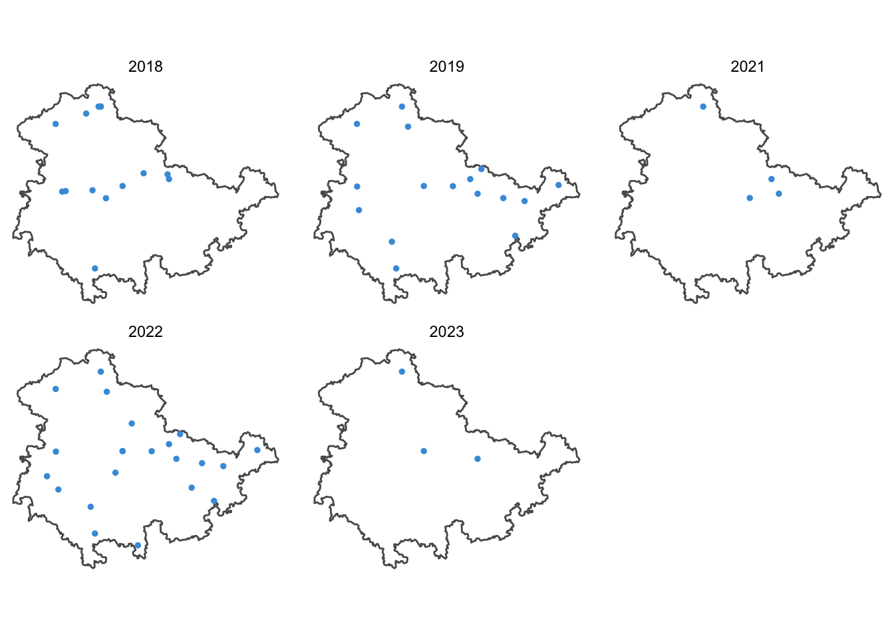
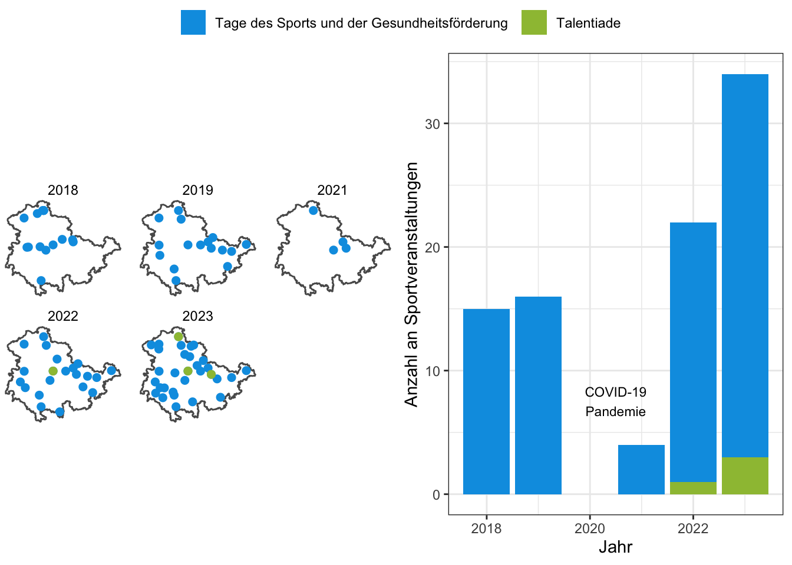

Veranstaltungen im Rahmen des Projektes (in Bearbeitung)
Historie


Updates
- 2023-05-03: COVID-19-Pandemie Annnotation in Balkendiagramm
- 2023-04-25: Erstellen der Seite
Zitat
Mit BibTeX zitieren:
@online{wöhrl2023,
author = {Toni Wöhrl and Florian Bähr},
editor = {},
title = {Veranstaltungen im Rahmen des Projektes (in Bearbeitung)},
date = {2023-04-25},
url = {git@github.com:bekigeki/bekigeki.github.io/003.html},
langid = {de}
}
Bitte zitieren Sie diese Arbeit als:
Toni Wöhrl, and Florian Bähr. 2023. “Veranstaltungen im Rahmen des
Projektes (in Bearbeitung).” April 25, 2023. git@github.com:bekigeki/bekigeki.github.io/003.html.